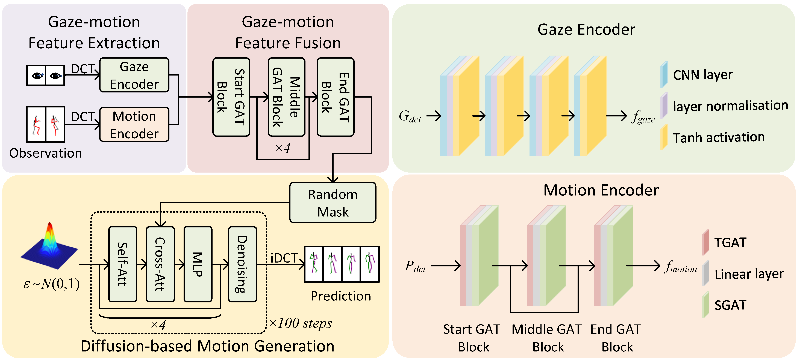

GazeMoDiff: Gaze-guided Diffusion Model for Stochastic Human Motion Prediction
Haodong Yan, Zhiming Hu, Syn Schmitt, Andreas Bulling
Proceedings of the Pacific Conference on Computer Graphics and Applications (Pacific Graphics), 2024: 1-12.

Abstract
Human motion prediction is important for many virtual and augmented reality (VR/AR) applications such as collision avoidance and realistic avatar generation. Existing methods have synthesised body motion only from observed past motion, despite the fact that human eye gaze is known to correlate strongly with body movements and is readily available in recent VR/AR headsets. We present GazeMoDiff – a novel gaze-guided denoising diffusion model to generate stochastic human motions. Our method first uses a gaze encoder and a motion encoder to extract the gaze and motion features respectively, then employs a graph attention network to fuse these features, and finally injects the gaze-motion features into a noise prediction network via a cross-attention mechanism to progressively generate multiple reasonable human motions in the future. Extensive experiments on the MoGaze and GIMO datasets demonstrate that our method outperforms the state-of-the-art methods by a large margin in terms of multi-modal final displacement error (17.3% on MoGaze and 13.3% on GIMO). We further conducted a human study (N=21) and validated that the motions generated by our method were perceived as both more precise and more realistic than those of prior methods. Taken together, these results reveal the significant information content available in eye gaze for stochastic human motion prediction as well as the effectiveness of our method in exploiting this information.Links
BibTeX
@inproceedings{yan24gazemodiff,
title={GazeMoDiff: Gaze-guided Diffusion Model for Stochastic Human Motion Prediction},
author={Yan, Haodong and Hu, Zhiming and Schmitt, Syn and Bulling, Andreas},
booktitle={Proceedings of the Pacific Conference on Computer Graphics and Applications},
year={2024},
pages={1--12},
doi={10.2312/pg.20241315}}